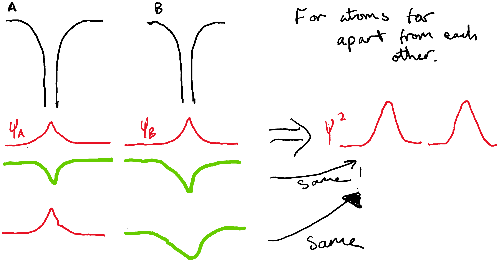
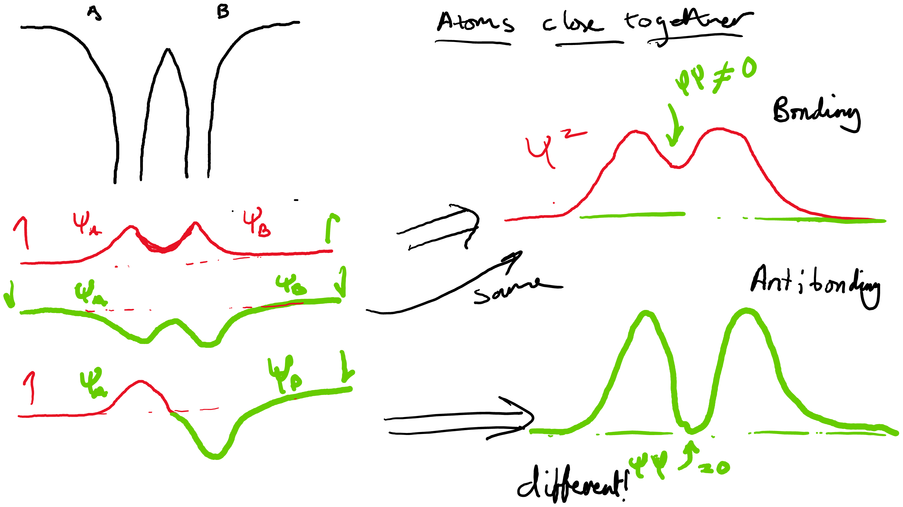
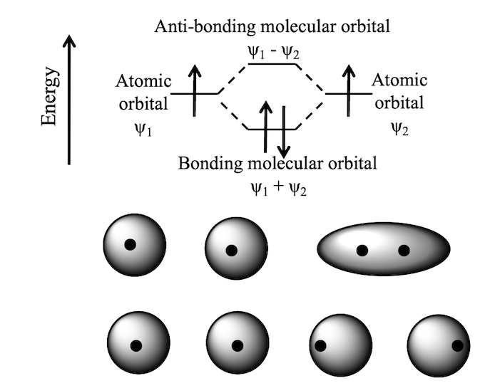
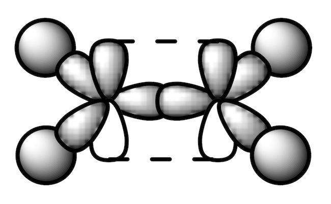

8. Molecular Orbitals and Covalent Bonding#
8.1 Introduction to Molecular Orbitals#
Covalent bonding can be understood using molecular orbital theory.
Instead of treating electrons as belonging to individual atoms, we consider molecular orbitals formed by atomic orbitals.
The number of molecular orbitals formed is equal to the number of atomic orbitals combined.
8.2 The Linear Combination of Atomic Orbitals (LCAO)#
Molecular orbitals are formed by adding or subtracting atomic orbitals:
Bonding orbital (σ, π): Constructive interference (lower energy, stabilizing).
Anti-bonding orbital (σ*, π*): Destructive interference (higher energy, destabilizing).
Electrons fill molecular orbitals according to Aufbau’s principle and Hund’s rule.
8.3 Origin of Bonding and Anti-Bonding Orbitals#
When two atomic orbitals overlap, they combine in two possible ways:
Constructive Interference (Bonding Orbital):
The wavefunctions of atomic orbitals add together, increasing electron density between the nuclei.
This lowers the energy of the system, stabilizing the bond.
Example: The ( 1s ) orbitals of two hydrogen atoms combine to form a bonding σ molecular orbital.
Destructive Interference (Anti-Bonding Orbital):
The wavefunctions subtract from each other, leading to a node (region of zero electron density) between the nuclei.
This raises the energy of the system, making the molecule less stable.
Example: The same ( 1s ) orbitals of hydrogen also form an anti-bonding σ molecular orbital*, which is higher in energy.
Anti-bonds are more destabilizing than bonds are stabilizing, which is why molecules prefer filling bonding orbitals first.


Fig. 8.1 Top show two hydrogen electron wavefunctions a long distance apart. Bottom: When the atoms get close the wavefunctions can constructively and destructively interfer. Remove the electrons have both up and down states at the same time at this point so both anti-bonding and bonding occur creating two molecular orbitals.
8.3.1 Example: Molecular Orbitals in \(\text{H}_2\) and \(\text{He}_2\)#
\(H_2\) forms because only the bonding 1s \(\sigma\) orbital is occupied.
\(He_2\) does not form because both bonding 1s \(\sigma\) and anti-bonding 1s \(\sigma^*\) orbitals are occupied, canceling stability.
Bond order is given by $\( \text{Bond order}=\frac{1}{2} \left(\text{sum of bonding electrons} - \text{sum antibonding electrons} \right) \)$ If the bond order is <1 then it is unstable.
 Fig. 8.2. A Molecular orbital diagram of H bonding with H.
8.4 Sigma (σ) and Pi (π) Bonds#
Sigma (σ) Bonds: Formed by end-to-end overlap of s or p orbitals along the bond axis.
Pi (π) Bonds: Formed by sideways overlap of p orbitals above and below the atomic axis.
Single bonds are sigma bonds, double bonds have one sigma and one pi bond, and triple bonds have one sigma and two pi bonds.
8.5. Hybrid Molecular Orbitals**#
Hybridization explains molecular shapes and equivalent bonding in molecules.
\(sp^3\) hybridization: One s orbital + three p orbitals → four equivalent \( sp^3 \) orbitals (e.g., methane \(CH_4\).
\(sp^2\) hybridization: One s orbital + two p orbitals → three \(sp^2\) orbitals (e.g., ethene \( C_2H_4 \)).
** sp hybridization:** One s orbital + one p orbital → two ** sp ** orbitals (e.g., acetylene \( C_2H_2 \)).
8.5.1 Example: Hybridization in Methane and Ethene#
Methane (CH₄): Carbon undergoes \(sp^3\) hybridization, forming four equivalent bonds at 109.5°.
Ethene (C₂H₄): Carbon undergoes \( sp^2\) hybridization, forming a planar structure with a double bond.
 Fig 8.3. Space fill diagram of ethene showing the sp orbitals with sigma bonding and the p orbitals forming \(\pi\)-orbitals.
8.6 Key Differences Between σ and π Bonds**#
Feature |
Sigma (σ) Bond |
Pi (π) Bond |
|---|---|---|
Orbital Overlap |
End-to-end |
Sideways |
Strength |
Stronger |
Weaker |
Rotation |
Free Rotation |
Restricted Rotation |
Bond Type |
Present in single, double, triple bonds |
Present in double and triple bonds only |
8.7 Main Takeaways#
Molecular orbitals result from atomic orbital combinations (bonding and anti-bonding).
Bonding orbitals lower the energy of a molecule, while anti-bonding orbitals increase it.
Sigma bonds involve direct orbital overlap, while pi bonds form via sideways p orbital interactions.
Hybridization explains molecular shapes and bonding equivalence.
Bond order determines bond strength and stability, while unpaired electrons indicate paramagnetism.
π bonds are more reactive than σ bonds due to their electron distribution.